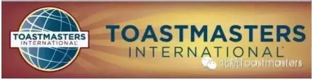

Time: 19:00-21:30, Friday, 1st Sep
Venue: Room B104, New Main Building, Beihang Universit
古都的秋又一次伴着秋风徐徐而来，小伙伴又要开始他们的新的征程了。
再出发，我们始于前行，忠于前行，莫忘初心。我们又一次呆着信心，满怀真心的踏上我们熟悉的舞台，而这次舞台更大，我们在这学期的一开始就举办我们的秋季演讲比赛，看来大家在这个假期的蓄势待发终于有了一展宏图的机会。
中文演讲比赛
1）路摊之王 张博文
“大金链子小手表，一天三顿吃烧烤”，作为吃遍宇宙中心的男人，张博文一定有很多经验告诉你。让我们一起见证路摊之王的诞生。
2）羡慕嫉妒恨 张纯洁
我们的优雅姐一如既往地被人羡慕嫉妒恨着，但是我只凝视如台望山，你之仰望似山望月。让我们的优雅姐告诉你天自昭归处炯，我自独行，心安即是归处。
3）点评演讲比赛
这一只是我们头马的特色项目，神秘的嘉宾，更神秘的点评演讲。还能说什么？谢天谢地你来了——John , Qiqi, Huan
英文演讲比赛
4）life with a typical engineering man -star
love is not always like a box of sweat sugar, but taste more like a cup of tea.Maybe it is a little salty for others, but it must be treasure for you.Some of us get dipped in flat, some in satin, some in gloss. But every once in a while you find someone who's iridescent, and when you do, nothing will ever compare.
5）what do we live for?-sarah
the value of life has already been discussed so many times by different people from diverse class, however，it is still one of the most comfusing problem among a individual's life.now ,let us listen to sarah.
周五晚上，我们一同见证~~
What is Toastmasters?
Toastmasters International (TI) is a non-profit educational organization that operates clubs worldwide for thepurpose of helping members improve their communication, public speaking, and leadership skills.

https://mp.weixin.qq.com/s/a2QE0y1KEv2J3NC0as_NKg
本页为抢救式本地归档，图文已永久保存。